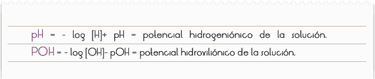
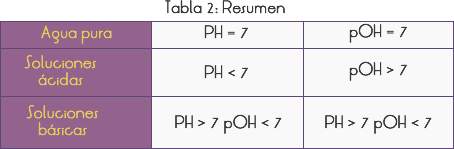
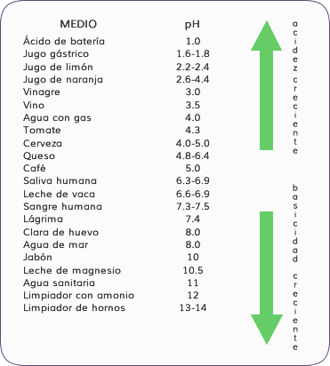
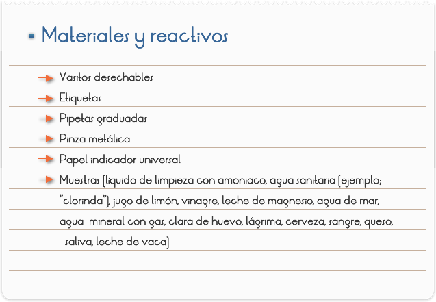
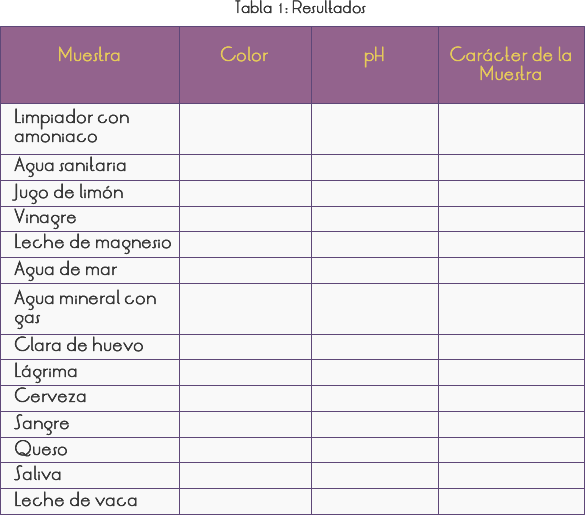

Introducción
En general, se realiza la medición del pH de una solución aguada de dos formas: a través de aparatos denominados pHmetros (acidímetros), que poseen una escala ya graduada en valores de pH; o a través de indicadores de ácido-base – los llamados indicadores universales – que son mezclas de varios indicadores (amarillo de metilo, azul de bromotimol, azul de timol, fenolftaleína, amarillo de alizarina GG, azul de ypsilon), cuyo color varia gradualmente, mostrando cual es el valor del pH de la solución.
En función de los valores extremadamente bajos de la constante de ionización del agua (Kw.) y, por lo tanto, de la baja concentración de los iones H+ y OH- en el agua pura, para evitar el uso de expresiones matemáticas con exponentes negativos, el químico danés Sörensen propuso las definiciones en 1909:

Partiendo del producto iónico del agua [H+]. [OH] = 10-14
Se extraen los logaritmos log [H+] . [OH] = 10-14
Se llega a: pH + pOH = 14
En agua pura
pH = pOH = 7
En soluciones ácidas:
[H+] 10-7 => log [H+] > - 7 => - log [H+] < 7 => PH < 7
[OH] < 10-7 => log [OH-] < - 7 => - log [OH] > 7 => pOH > 7
En soluciones básicas:
[H+] < 10-7 => log [H+] < -7 => - log [H+] > 7 => pH > 7
[OH] > 10-7 => log [OH-] > -7 => - log [OH-] < 7 => pOH < 7

Ejemplificando: Cálculo del pH de una solución, cuya concentración de iones [H+] es 1,0 . 10-12 mol/l.
PH = - log [H+]
PH = - log 1,0 . 10-12
PH = 12 pOH = 2
PH > 7 y pOH < 7 = solución básica
En la agricultura, el conocimiento del PH del suelo es extremadamente importante. En Brasil, hay predominio de suelos ácidos (PH entre 4,5 y 5,9). Durante la plantación, el agricultor precisa hacer la corrección del suelo, dejándolo adecuado para el desenvolvimiento de cada cultivo (la plantación de arroz, se desarrolla apropiadamente con PH variando entre 5,0 a 6,5). La corrección se realiza al agregar calcáreo (carbonato de sodio – CaCO3)
La Tabla 3 presenta el pH característico de algunos medios presentes en nuestro cotidiano.

Objetivo
Determinar el PH a través de los colores.

1) Colocar una pequeña cantidad de líquido de limpieza con amoniaco (@ 01 ml), en un vasito desechable, sujetar un pedazo de papel universal con la pinza metálica, humedecer en la muestra y observar el color resultante del indicador.
2) Comparar con el código padrón de colores, anotar el color y el PH correspondiente en la Tabla 1.
3) Repetir las instrucciones 1 y 2 con cada muestra, lavando bien las pipetas cuando se vaya a cambiar de muestra.

Cuestionario
1) ¿Qué es el pH?
2) ¿Cuál es la expresión matemática del pH?
3) Clasifique cada muestra en lo referente al carácter ácido, básico o neutro, tomando en cuenta el PH determinado a través de los colores del indicador.
4) ¿Cuál es la importancia biológica del pH?
5) De las muestras analizadas ¿cuál presenta el mayor pH? Justifique.
6) Calcule el PH y el pOH de una solución, que presente la concentración de iones [H+] = 1,0. 10 – 12 mol/l.
7) ¿Cuál es el carácter de esa solución?
8) Un agricultor va a plantar maíz en un cultivo que necesita de un PH entre 5,5 a 7,5. ¿Qué sustancia puede ser agregada al suelo cuando éste se presenta ácido?
9) Por el análisis de las muestras hechas ¿podemos afirmar que la cerveza se presenta menos ácida que el vinagre?